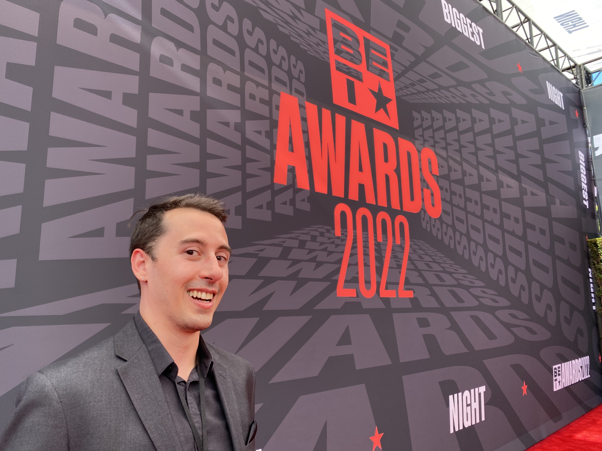

Dan Tiffany's Resume

Los Angeles, CA
Summary:
Professional entertainment industry veteran transitioning to the world of tech.
Education:
*Emerson College - B.A. Theatre Studies
*Udemy - "The Complete 2023 Web Development Bootcamp" Graduate
Work Experience:
Brave New Media
- Line Producer for press events including The BET Awards and the Emmy Awards
- Tracked red carpet labor and expenses to keep project on budget.
- Acted as liason between studio accounting, production, and various vendors.
- Stage Manager, Script Supervisor, PA Lead for TCA Panels.
- Online tech support for virtual press events for FOX Television.
- Responded to log-in tickets as they came in for livestreamed events.
Local 871
- Art Department Coordinator for Film & Television
- Organized and maintained digital files for entire department.
- Processed all of department's paperwork including:
- New Employee Startwork & Timecards.
- Purchase orders, Check requests, and cash/credit card transaction logs for accounting.
- Vendor Agreements and legal clearances.
Skills:
-Laser focused attention to detail.
-Ability to learn and adapt to new situations with a clear head.
-Project management (ability to lead a team to stay on task with multiple objectives)
Misc Info: